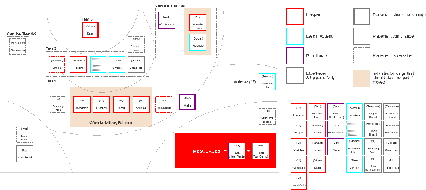
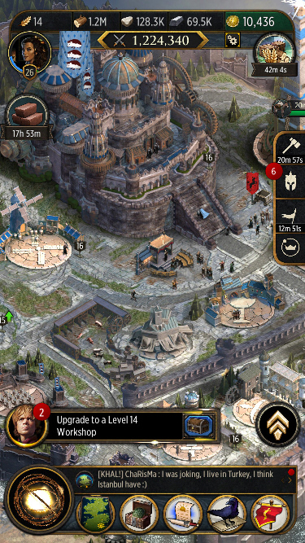
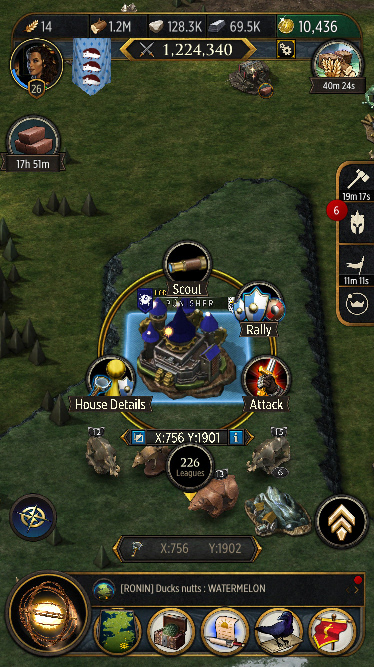
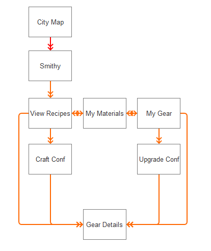
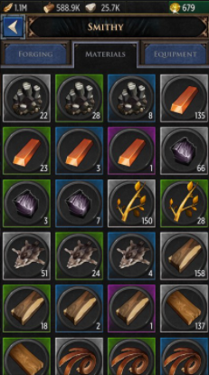
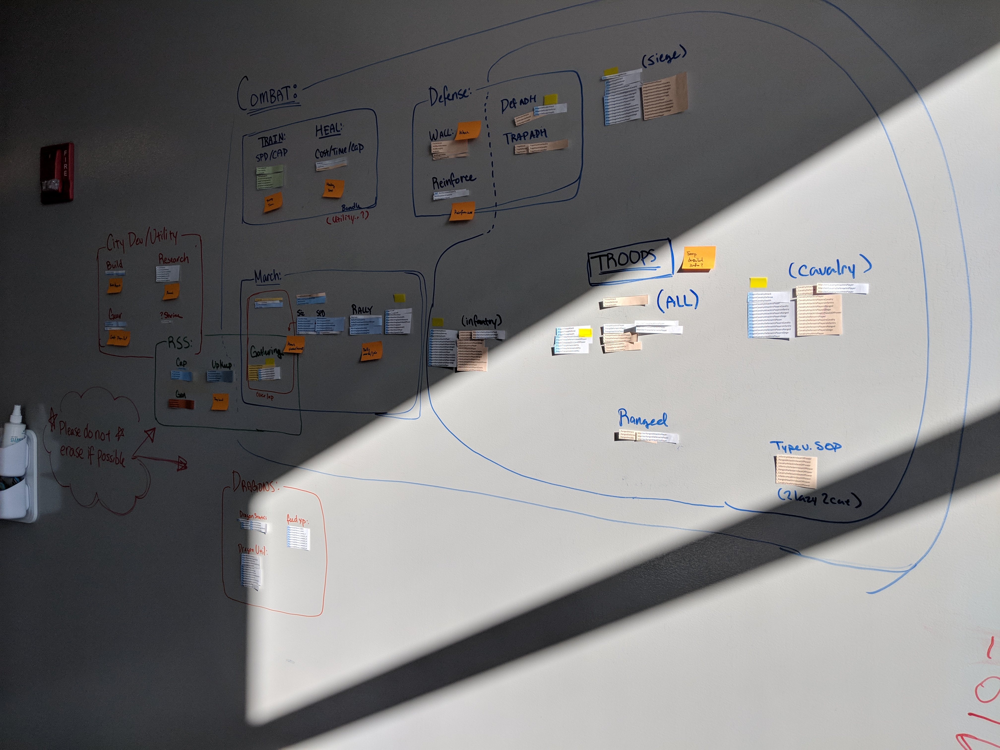
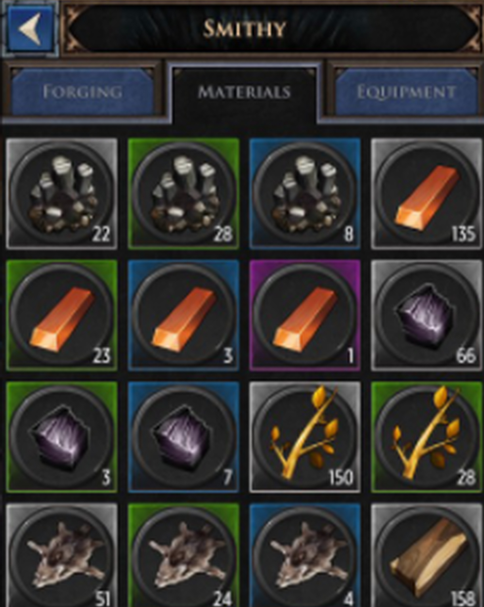
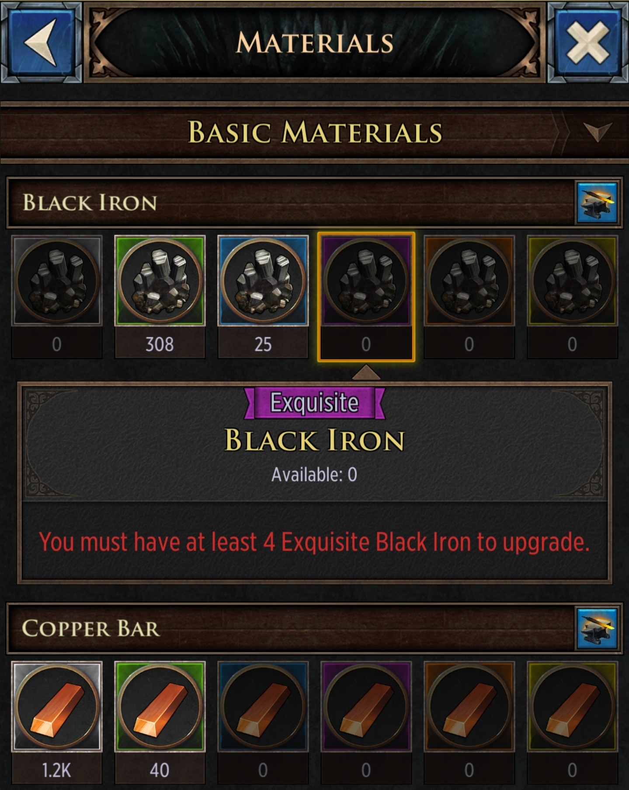

Main Focus: Wireframing(IA) | Prototyping | User Research | Usability Testing | Interface Design
Game of Thrones: Conquest is a free-to-play strategy game. Throughout development there were a number of challenges from expanding features and content over time that gave us a unique problem-solving opportunity. I was also given the unique opportunity to design many of the launch features and set up the format of the UI wireframe network that other disciplines would use as a reference throughout the production process.
Designing for GoT:C
GoT:C posed a lot of challenges early on, from fusing IP to future proofing content layouts when IA designing. A big part of this was in the HUD and City Building layouts, which were crucial to gameplay throughout all stages of a players' journey from casual to core players.
We held meetings throughout the production process with stakeholders to gain a base understanding of requirements and align expectations. This was especially important in the early days of making the game when features were being built parallel to the development of the main "hub" of the game.

City IA Layout that I worked on. All buildings are tagged and colored by different criteria.
The city inner building layouts were initially laid out with an artistic vision in mind, but that quickly proved to be a problem as efficiently taking care of repetetive tasks became extremely time consuming. An interaction heatmap was made to see what the most frequented tasks were, and I made a new map layout based off of the research results to streamline tasks and make habitualizing core game tasks easier.

The HUD and City/Combat Maps Today
As the game entered 1+ years of live operations, there was a significant amount of UX debt and feature creep that had made many features difficult to use. The HUD saw the most iteration over time as it was an important hub for the rest of the game to function, but one of the major updates to the game was an overhaul of the Crafting System which I was responsible for.

Original Crafting System. Everything fit into a single panel.
The early version of the crafting suffered from lack of visibility and usability. Players had no way of finding out how to use crafting materials until they had entered the crafting menu which was not supported at the time.
Upon a quick study, I got the following results:
Goal forming & decision making is diffcult
The amount of options is overwhelming
Craftability(whether you can craft an item or not) is unclear
Taking this feedback, it was clear that the "streamlined single-panel system" was causing analysis paralysis among other issues, and I rewired the entire system to utilize a "hub" architecture. Hubs allow for focused gameplay and takes out extra distractions for complex systems. Other efforts to solve issues included integrating crafting information into other UI such as events for discovery, and creating a filtering system to make goal forming easier.

My Sherlok wall of 200+ stats that were segmented into sections for filter targets.
 
Left: Original Right: Updated
Our initial setup of 4 materials per row cluttered the UI really fast as we added more materials.
Categorizing cleaned up the UI and also allowed for additional navigation and visual cues for better goal forming.
After a few rounds of testing we were confident that the changes were going to be both a good QOL updated and feature update. The crafting update was overall very successful and upon release we saw a growth in engagement and it remains a very powerful driver in events and gameplay today.
Throughout my time at WB Games Boston, I personally learned a lot through working in collaboration with different disciplines, the excitement of working on a product to release and the hurdles that come with live operations/features growing over time, and how to adjust to different team sizes while keeping communication in check. It continues to motivate me to learn more and continuously make better designs today :)